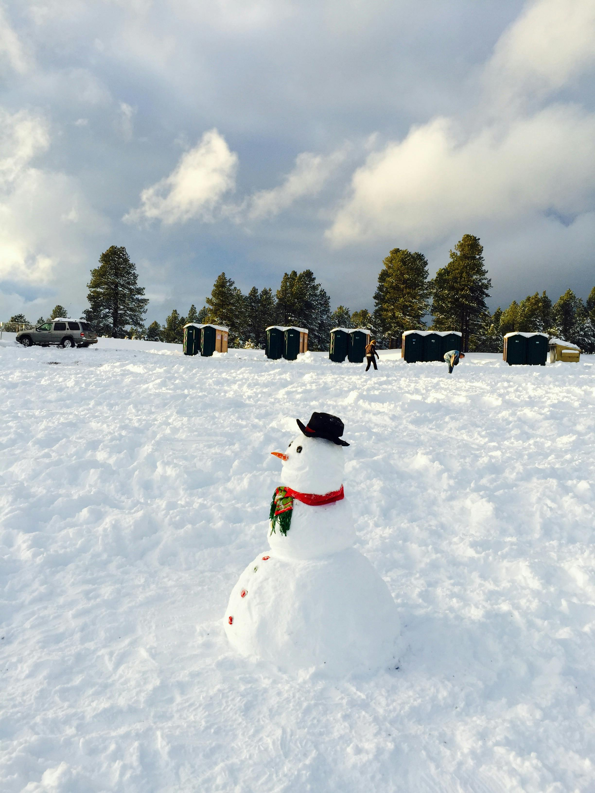
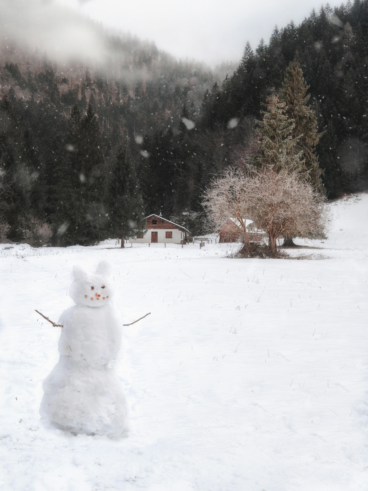

눈사람 만들기
눈사람은 단순한 겨울 놀이를 넘어 겨울의 아름다움과 가족, 친구들과의 유대감을 느낄 수 있는 활동입니다.
눈이 내리면 밖으로 나가 손과 발이 시릴 정도로 눈을 만지며 함께 만드는 눈사람은 잊지 못할 추억을 남기기 좋은 활동입니다.
올 겨울, 눈이 내리면 가족과 친구들과 함께 밖으로 나가, 따뜻한 마음으로 눈사람을 만들어보세요.
그 순간만큼은 모든 것이 멈추고, 눈사람과 함께한 특별한 시간이 여러분의 마음을 따뜻하게 채워줄 것입니다.

눈사람 만들기의 기본
눈사람을 만드는 과정은 그리 복잡하지 않지만, 그 단순함 속에서 큰 즐거움과 만족을 느낄 수 있습니다.
기본적으로 세 개의 큰 눈덩이를 만들고, 그것들을 차례대로 쌓아 올리는 것으로 시작됩니다.
가장 큰 덩어리가 아래쪽에 오고, 점점 작아지는 덩어리를 차례로 올리면 자연스럽게 눈사람의 형태가 완성됩니다.
눈사람을 만드는 즐거움
눈덩이를 쌓은 후, 각기 다른 방법으로 눈사람을 꾸미는 과정은 사람마다 다를 수 있습니다.
예를 들어, 당근을 코로, 단추나 돌을 눈으로, 모자와 스카프를 장식으로 쓰면 눈사람은 그 자체로 생명력을 얻습니다.
1이러한 장식들은 단순한 눈사람에 특별한 개성을 부여하며, 자신만의 독특한 눈사람을 만들 수 있는 기회를 제공합니다.

눈사람 만들기의 매력
눈사람 만들기는 단순히 눈을 쌓는 것 이상의 의미가 있습니다.
겨울의 추위 속에서도 따뜻한 마음과 협동을 느낄 수 있는 활동이기 때문입니다.
친구들이나 가족과 함께 눈을 쌓고, 웃음 속에서 눈사람을 완성하는 과정은 소중한 추억으로 남습니다.
또한, 만들고 나서 완성된 눈사람을 바라보며 뿌듯함을 느끼는 순간은 그 어떤 일보다도 큰 보람을 안겨줍니다.